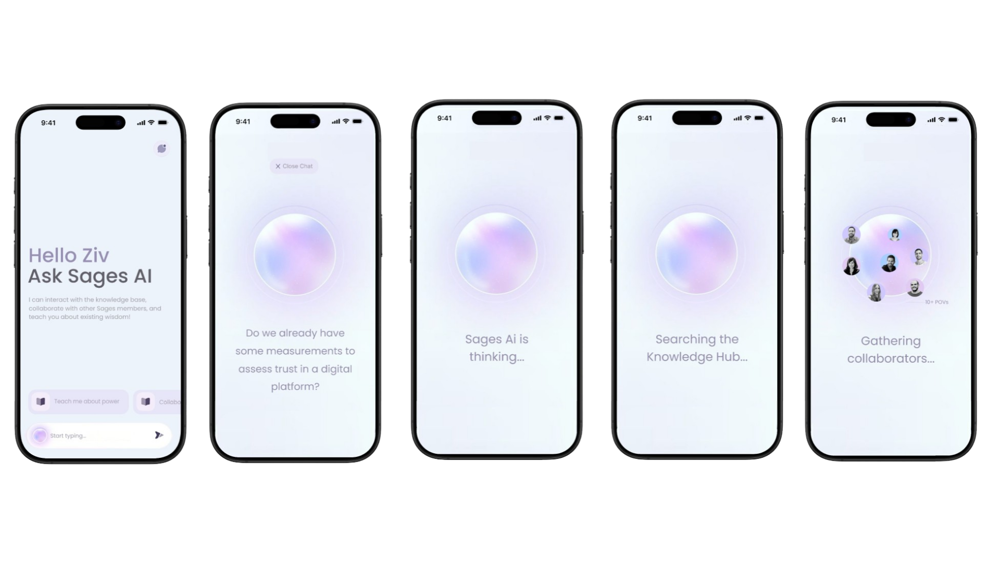

Sages · Product Design
Research Tool Product Design
Designed a research tool interface end-to-end — from early sketches to prototypes used for final development.
My role
I owned the end-to-end product design — from early exploration and flow definition to UI, component system, and high-fidelity prototypes used for MVP planning and fundraising.
- Defined core journeys for both mobile and desktop versions
Sketch to final design
Design approach
- Started with quick sketches and brainstorming sessions with product and research team.
- The goal was to create a tool that can be used both internally, and as an initial pilot of our MVP product.
Selected screens

High-fidelity Mobile Version
Skills & methods
- Wireframing
- Prototyping
- Interaction design
- Design systems & componentization
- Information architecture
- Stakeholder reviews & iteration